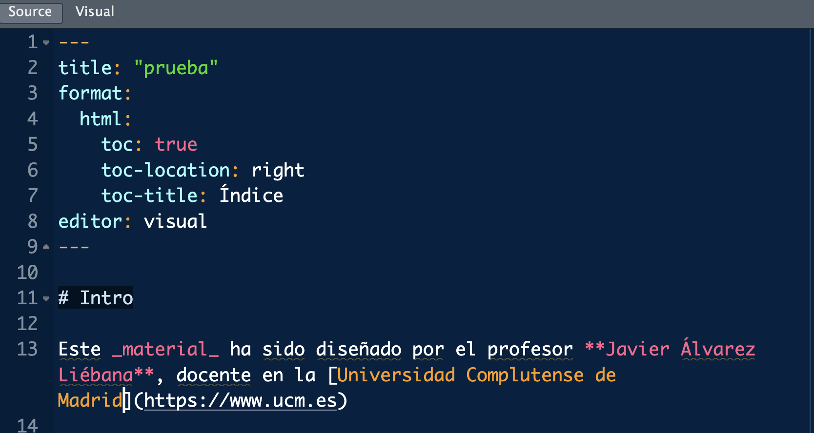
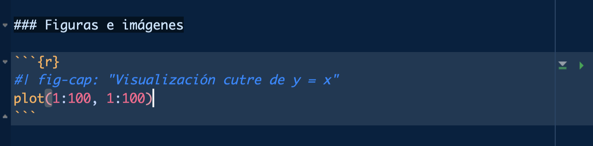

Licenciado en Matemáticas (UCM). Doctorado en estadística (UGR).
Encargado de la visualización y análisis de datos covid del Principado de Asturias (2021-2022).
Miembro de la Sociedad Española de Estadística e IO y la Real Sociedad Matemática Española.
Actualmente, investigador y docente en la Facultad de Estadística de la UCM. Divulgando por Twitter e Instagram
Objetivos
Quitarnos el miedo a los errores en programación → a programar se aprende programando
Entender los conceptos básicos de R desde cero → aprender a abstraer ideas y algoritmos
Utilidad de programar → flujos de trabajo reproducibles, transparentes y mantenibles
Introducción al análisis y preprocesamiento de datos → {tidyverse}
Adquirir habilidades en la visualización de datos → {ggplot2}
Evaluación
Asistencia. La asistencia no será obligatoria pero si se valorará muy positivamente la participación en clase (nunca penalizando).
Evaluación. A lo largo del curso se han planteado 5 entregas individuales, así como una entrega final grupal (entre 2 y 4 personas) donde se deberá presentar el análisis realizado de un caso real.
Nota mínima. Para no ir al examen final se deberá obtener al menos un 4/10 en cada entrega o una media ponderada superior al 6/10. Se deberá obtener además en la entrega grupal una nota superior a 6-6.5-7/10 (según 2-3-4 personas)
Examen final. Cualquier alumno podrá presentarse a un examen final, siendo la valoración del mismo el 100% de su nota (perdiendo la evaluación continua).
En el menú de las diapositivas (abajo a la izquierda) tienes una opción para descargarlas en pdf en Tools (consejo: no lo hagas hasta el final del curso ya que irán modificándose)
Paso 2: para Mac basta con que hacer click en el archivo .pkg, y abrirlo una vez descargado. Para sistemas Windows, debemos clickar en install R for the first time y después en Download R for Windows. Una vez descargado, abrirlo como cualquier archivo de instalación.
Paso 3: abrir el ejecutable de instalación.
Cuidado
Siempre que tengas que descargar algo de CRAN (ya sea el propio R o un paquete), asegúrate de tener conexión a internet.
Primera operación
Para comprobar que se ha instalado correctamente, tras abrir R, deberías ver una pantalla blanca similar a esta.
Esa «pantalla blanca» se llama consola y podemos hacer un primer uso de ella como una calculadora.
Idea: a una variable llamada a le asignaremos el valor 1 (escribiremos el código de abajo en la consola y daremos «enter»)
a <-1
Primera operación
Para comprobar que se ha instalado correctamente, tras abrir R, deberías ver una pantalla blanca similar a esta.
Esa «pantalla blanca» se llama consola y podemos hacer un primer uso de ella como una calculadora.
Idea: definiremos otra variable llamada b y le asignaremos el valor 2
a <-1b <-2
Fíjate que…
En R usaremos <- como una flecha: la variable a la izquierda de dicha flecha le asignamos el valor que hay a la derecha (por ejemplo, a <- 1)
Primera operación
Para comprobar que se ha instalado correctamente, tras abrir R, deberías ver una pantalla blanca similar a esta.
Esa «pantalla blanca» se llama consola y podemos hacer un primer uso de ella como una calculadora.
Idea: haremos la suma a + b y nos devolverá su resultado
a <-1b <-2a + b
[1] 3
Instalación de R Studio
RStudio será el Word que usaremos para escribir (lo que se conoce como un IDE: entorno integrado de desarrollo).
Paso 1: entra la web oficial de RStudio (ahora llamado Posit) y selecciona la descarga gratuita.
Paso 2: selecciona el ejecutable que te aparezca acorde a tu sistema operativo.
Paso 3: tras descargar el ejecutable, hay que abrirlo como otro cualquier otro y dejar que termine la instalación.
Organización de RStudio
Al abrir RStudio seguramente tengas tres ventanas:
Consola: es el nombre para llamar a la ventana grande que te ocupa buena parte de tu pantalla. Prueba a escribir el mismo código que antes (la suma de las variables) en ella. La consola será donde ejecutaremos órdenes y mostraremos resultados.
Organización de RStudio
Al abrir RStudio seguramente tengas tres ventanas:
Environment: la pantalla pequeña (puedes ajustar los márgenes con el ratón a tu gusto) que tenemos en la parte superior derecha. Nos mostrará las variables que tenemos definidas.
Organización de RStudio
Al abrir RStudio seguramente tengas tres ventanas:
Panel multiusos: la ventana que tenemos en la parte inferior derecha no servirá para buscar ayuda de funciones, además de para visualizar gráficos.
¿Qué es R? ¿Por qué R?
¿Qué es R? ¿Por qué R?
R es el lenguaje estadístico por excelencia, creado por y para estadísticos/as, con 5 ventajas fundamentales frente a Excel:
Lenguaje de programación: la obviedad → análisisreplicables
Gratuito: la filosofía de la comunidad de R es el compartir código bajo copyleft→uso ético de dinero público
Software libre: no solo es gratis sino que permite acceder libremente a código ajeno, incluso al propio código fuente→flexibilidad y transparencia
Lenguaje modular: hemos instalado lo mínimo, pero existen códigos de otras personas que podemos reusar (casi 20 000 paquetes) →ahorro de tiempo
Lenguaje de alto nivel: facilita la programación (como Python) →menor curva de aprendizaje
¿Qué es R? ¿Por qué R?
¿Por qué programar?
Automatizar → te permitirá automatizar tareas recurrentes.
Replicabilidad → podrás replicar tu análisis siempre de la misma manera.
Flexibilidad → podrás adaptar el software a tus necesidades.
Transparencia → ser auditado por la comunidad.
Idea fundamental: paquetes
Una de las ideas claves de R es el uso de paquetes: códigos que otras personas han implementado para resolver un problema
Instalación: descargamos los códigos de la web (necesitamos internet) → comprar un libro, solo una vez (por ordenador)
install.packages("ggplot2")
Carga: con el paquete descargado, indicamos qué paquetes queremos usar cada vez que abramos RStudio → traer el libro de la estantería
library(ggplot2)
Idea fundamental: paquetes
Una vez instalado, hay dos manera de usar un paquete (traerlo de la estantería)
Paquete entero: con library(), usando el nombre del paquete sin comillas, cargamos en la sesión todo el libro
library(ggplot2)
Funciones concretas usando paquete::funcion le índicamos que solo queremos una página concreta de ese libro
ggplot2::geom_point()
Te vas equivocar
Durante tu aprendizaje va a ser muy habitual que las cosas no salgan a la primera → te vas equivocar. No solo será importante asumirlo sino que es importante leer los mensajes de error para aprender de ellos.
Mensajes de error: precedidos de «Error in…» y serán aquellos fallos que impidan la ejecución
"a"+1
Error in "a" + 1: argumento no-numérico para operador binario
Mensajes de warning: precedidos de «Warning in…» son los (posibles) fallos más delicados ya que son incoherencias que no impiden la ejecución
# Ejecuta la orden pero el resultado es NaN, **Not A Number**, un valor que no existesqrt(-1)
Warning in sqrt(-1): Se han producido NaNs
[1] NaN
Scripts (documentos .R)
Un script será el documento en el que programamos, nuestro archivo .doc (aquí con extensión .R) donde escribiremos las órdenes. Para abrir nuestro primero script, haz click en el menú en File < New File < R Script.
Cuidado
Es importante no abusar de la consola: todo lo que no escribas en un script, cuando cierres, lo habrás perdido.
Ejecutando el primer script
Ahora tenemos una cuarta ventana: la ventana donde escribiremos nuestros códigos. ¿Cómo ejecutarlo?
Escribimos el código a ejecutar.
Guardamos el archivo .R haciendo click en Save current document.
El código no se ejecuta salvo que se lo indiquemos. Tenemos tres opciones:
Copiar y pegar en consola.
Seleccionar líneas y Ctrl+Enter
Activar Source on save a la derecha de guardar: no solo guarda sino que ejecuta el código completo.
💻 Tu turno
Ejecuta tu primer script: crea un script de cero, programa lo indicado debajo y ejecútalo (de las 3 maneras posibles)
📝 Define una variable de nombre a y cuyo valor sea -1
Código
a <--1
📝 Añade debajo otra línea para definir una variable b con el valor 5. Tras ello múltiplica ambas variables
Código
b <-5a * b # sin guardarmultiplicacion <- a * b # guardado
📝 Modifica el código inferior para definir dos variables c y d, con valores 3 y -1. Tras ello divide las variables.
c <-# deberías asignarle el valor 3d <-# deberías asignarle el valor -1
Código
c <-3d <--1c / d # sin guardardivision <- c / d # guardado
📝 Asigna un valor positivo a x y calcula su raíz cuadrada; asigna otro negativo y y calcula su valor absoluto con la función abs().
Código
x <-5sqrt(x)y <--2abs(y)
📝 Usando la variable x ya definida, completa/modifica el código inferior para guardar en una nueva variable z el resultado guardado en x menos 5.
z <- ? - ? # completa el códigoz
Código
z <- x -5z
Toma nota
Comandos como sqrt(), abs() o max() son lo que llamamos funciones: líneas de código que hemos «encapsulado» bajo un nombre, y dado unos argumentos de entrada, ejecuta las órdenes (una especie de atajo).
Sé organizado: proyectos
De la misma manera que en el ordenador solemos trabajar de manera ordenada por carpetas, en RStudio podemos hacer lo mismo para trabajar de manera eficaz creando proyectos.
Un proyecto será una «carpeta» dentro de RStudio, de manera que nuestro directorio raíz automáticamente será la propia carpeta de proyecto (pudiendo pasar de un proyecto a otro con el menu superior derecho).
Podemos crear uno en una carpeta nueva o en una carpeta ya existente.
Filosofía: de la CELDA a la TABLA
¿Qué tipo de dato podemos tener en cada celda de una tabla?
Celda: dato individual de un tipo concreto.
Variable: concatenación de valores del mismo tipo (vectores).
Matriz: concatenación de variables del mismo tipo y longitud.
Tabla: concatenación de variables de distinto tipo pero igual longitud
Lista: concatenación de variables de distinto tipo y distinta longitud
Clase 2: primeros datos y vectores
¿Qué tipos de celdas (datos) existen? Concatenando celdas: vectores
De la CELDA a la TABLA
¿Qué tipo de dato podemos tener en cada celda de una tabla?
Celda: dato individual de un tipo concreto.
Variable: concatenación de valores del mismo tipo (vectores).
Matriz: concatenación de variables del mismo tipo y longitud.
Tabla: concatenación de variables de distinto tipo pero igual longitud
Lista: concatenación de variables de distinto tipo y distinta longitud
Celdas: tipos de datos
¿Existen variables más allá de los números?
Piensa por ejemplo en los datos guardados de una persona:
La edad o el peso será un número.
edad <-33
Su nombre será una cadena de texto (string o char).
nombre <-"javi"
A la pregunta «¿estás matriculado en la Facultad?» la respuesta será lo que llamamos una variable lógica (TRUE si está matriculado o FALSE en otro caso).
matriculado <-TRUE
Su fecha de nacimiento será precisamente eso, una fecha.
Variables numéricas
El dato más sencillo (ya lo hemos usado) serán las variables numéricas
a <-5b <-2a + b
Para saber el tipo de una variable tenemos la función class()
class(a)
[1] "numeric"
Además de los números «normales» tendremos el valor infinito
1/0
[1] Inf
Y valores que no son números realesnot a number (indeterminaciones, complejos, etc)
0/0
[1] NaN
Variables numéricas
Con las variables numéricas podemos realizar las operaciones aritméticas de una calculadora: sumar (+)…
a + b
[1] 7
…raíz cuadrada (sqrt())…
sqrt(a)
[1] 2.236068
… potencias (^2, ^3)…
a^2
[1] 25
…valor absoluto (abs()), etc.
abs(a)
[1] 5
Variables de texto
Imagina que además de la edad de una persona queremos guardar su nombre: ahora la variable será de tipo character
nombre <-"Javier"class(nombre)
[1] "character"
Las cadenas de texto son un tipo con el que obviamente no podremos hacer operaciones aritméticas (sí otras operaciones como pegar o localizar patrones).
nombre +1# error al sumar número a texto
Error in nombre + 1: argumento no-numérico para operador binario
Recuerda que…
Las variables de tipo texto (character o string) van SIEMPRE entre comillas: no es lo mismo TRUE (valor lógico, binario) que "TRUE" (texto).
Primera función: paste
En R llamaremos función a un trozo de código encapsulado bajo un nombre, y que depende de unos argumentos de entrada. Nuestra primera función será paste(): dadas dos cadenas de texto nos permite pegarlas.
paste("Javier", "Álvarez")
[1] "Javier Álvarez"
Fíjate que por defecto nos pega las cadenas con un espacio, pero podemos añadir un argumento opcional para indicarle el separador (en sep = ...).
paste("Javier", "Álvarez", sep ="*")
[1] "Javier*Álvarez"
Primera función: paste
¿Cómo saber qué argumentos necesita una función? Escribiendo en consola ? paste te aparecerá una ayuda en el panel multiusos.
En dicha ayuda podrás ver en su cabecera que argumentos ya tiene asignados por defecto la función
Existe una función similar llamada paste0() que pega por defecto con sep = "" (sin nada).
paste0("Javier", "Álvarez")
[1] "JavierÁlvarez"
Funciones: argumentos por defecto
Es muy importante entender el concepto de argumento por defecto de una función en R: es un valor que la función usa pero a veces podemos no ver porque ya tiene un valor asignado.
# Hacen lo mismopaste("Javier", "Álvarez")
[1] "Javier Álvarez"
paste("Javier", "Álvarez", sep =" ")
[1] "Javier Álvarez"
Toma nota
El operador = lo reservaremos para asignar argumentos dentro de funciones. Para todas las demás asignaciones usaremos <-
Primer paquete: glue
Una forma más intuitiva de trabajar con textos es usar el paquete {glue}: lo primero que haremos será «comprar el libro» (si nunca lo hemos hecho). Tras ello cargamos el paquete
install.packages("glue") # solo la primra vezlibrary(glue)
Con la función glue() de dicho paquete podemos usar variables dentro de cadenas de texto. Por ejemplo, «la edad es de … años», donde la edad está guardada en una variable.
edad <-33glue("La edad es de {edad} años")
La edad es de 33 años
Dentro de las llaves también podemos ejecutar operaciones
unidades <-"días"glue("La edad es de {edad * 365} {unidades}")
La edad es de 12045 días
Variables lógicas
Otro tipo fundamental serán las variables lógicas o binarias (dos valores):
TRUE: verdadero guardado internamente como un 1.
FALSE: falso guardado internamente como un 0.
soltero <-TRUE# ¿Es soltero? --> SÍclass(soltero)
[1] "logical"
Dado que internamente están guardados como variables binarias, podemos realizar operaciones aritméticas con ellas
2*TRUE
[1] 2
FALSE-1
[1] -1
Variables lógicas
Como veremos en breve, las variables lógicas en realidad puede tomar un tercer valor: NA o dato ausente, representando las siglas de not available, y será muy habitual encontrarlo dentro de una base de datos.
ausente <-NAausente +1
[1] NA
Importante
Las variables lógicas NO son variables de texto: "TRUE" es un texto, TRUE es un valor lógico.
TRUE+1
[1] 2
"TRUE"+1
Error in "TRUE" + 1: argumento no-numérico para operador binario
Condiciones lógicas
Los valores lógicos suelen ser resultado de evaluar condiciones lógicas. Por ejemplo, imaginemos que queremos comprobar si una persona se llama Javi.
nombre <-"María"
Con el operador lógico== preguntamos sí lo que tenemos guardado a la izquierda es igual que lo que tenemos a la derecha: es una pregunta
nombre =="Javi"
[1] FALSE
Con su opuesto != preguntamos si es distinto.
nombre !="Javi"
[1] TRUE
Fíjate que…
No es lo mismo <- (asignación) que == (estamos preguntando, es una comparación lógica).
Condiciones lógicas
Además de las comparaciones «igual a» frente «distinto», también comparaciones de orden como <, <=, > o >=.
¿Tiene la persona menos de 32 años?
edad <-34edad <32# ¿Es la edad menor de 32 años?
[1] FALSE
¿La edad es mayor o igual que 38 años?
edad >=38
[1] FALSE
¿El nombre guardado es Javi?
nombre <-"Javi"nombre =="Javi"
[1] TRUE
Variables de fecha
Un tipo de datos muy especial: los datos de tipo fecha.
fecha_char <-"2021-04-21"
Parece una simple cadena de texto pero debería representar un instante en el tiempo. ¿Qué debería suceder si sumamos un 1 a una fecha?
fecha_char +1
Error in fecha_char + 1: argumento no-numérico para operador binario
Las fechas NO pueden ser texto: debemos convertir la cadena de texto a fecha.
Para trabajar con fechas usaremos el paquete {lubridate}, que deberemos instalar antes de poder usarlo.
install.packages("lubridate")
Variables de fecha
Una vez instalado, de todos los paquetes (libros) que tenemos, le indicaremos que nos cargue ese concretamente.
library(lubridate) # instala si no lo has hecho
Para convertir a tipo fecha usaremos la función as_date() del paquete {lubridate}
# ¡no es una fecha, es un texto!fecha_char +1
Error in fecha_char + 1: argumento no-numérico para operador binario
class(fecha_char)
[1] "character"
fecha <-as_date("2023-03-28")fecha +1
[1] "2023-03-29"
class(fecha)
[1] "Date"
Variables de fecha
En dicho paquete tenemos funciones muy útiles para manejar fechas:
Con today() podemos obtener directamente la fecha actual.
today()
[1] "2023-09-26"
Con now() podemos obtener la fecha y hora actual
now()
[1] "2023-09-26 12:02:22 CEST"
Con year(), month() o day() podemos extraer el año, mes y día
fecha <-today()year(fecha)
[1] 2023
month(fecha)
[1] 9
Resúmenes de paquetes
Amplia contenido
Tienes un resumen en pdf de los paquetes más importantes en la carpeta correspondiente en el campus
💻 Tu turno
Intenta realizar los siguientes ejercicios sin mirar las soluciones
📝 Define una variable que guarde tu edad (llamada edad) y otra con tu nombre (llamada nombre)
Código
edad <-33nombre <-"Javi"
📝 Comprueba si NO tienes 60 años o si te llamas “Ornitorrinco” (debes obtener variables lógicas)
Código
edad !=60# distinto denombre =="Ornitorrinco"# igual a
📝 Define otra variable llamada hermanos que responda la pregunta «¿tienes hermanos?» y otra variable que almacene tu fecha de nacimiento (llamada fecha_nacimiento).
Código
hermanos <-TRUElibrary(lubridate) # sino lo tenías ya cargadofecha_nacimiento <-as_date("1989-09-10")
📝 Define otra variable con tus apellidos (llamada apellidos) y usa glue() para tener, en una sola variable llamada nombre_completo, tu nombre y apellidos separando nombre y apellido por una coma
📝 Calcula los días que han pasado desde la fecha de tu nacimiento hasta hoy (con la fecha de nacimiento definida en el ejercicio 3).
Código
today() - fecha_nacimiento
Vectores: concatenar
Cuando trabajamos con datos normalmente tendremos columnas que representan variables: llamaremos vectores a una concatenación de celdas (valores) del mismo tipo (lo que sería una columna de una tabla).
La forma más sencilla es con el comando c() (c de concatenar), y basta con introducir sus elementos entre paréntesis y separados por comas
edades <-c(32, 27, 60, 61)edades
[1] 32 27 60 61
Consejo
Un número individual x <- 1 (o bien x <- c(1)) es en realidad un vector de longitud uno –> todo lo que sepamos hacer con un número podemos hacerlo con un vector de ellos.
Vectores: concatenar
Como ves ahora en el environment tenemos una colección de elementos guardada
edades
[1] 32 27 60 61
La longitud de un vector se puede calcular con length()
length(edades)
[1] 4
También podemos concatenar vectores entre sí (los repite uno tras otro)
c(edades, edades, 8)
[1] 32 27 60 61 32 27 60 61 8
Secuencias numéricas
El vector más famoso será el de tipo numérico, y en concreto, las conocidas como secuencias numéricas (por ejemplo, los días del mes), usadas para, entre otras cosas, indexar bucles.
El comando seq(inicio, fin) nos permite crear una secuencia numérica desde un elemento inicial hasta uno final, avanzando de uno en uno.
Un vector es una concatenación de elementos del mismo tipo, pero no tienen porque ser necesariamente números. Vamos a crear una frase de ejemplo.
frase <-"Me llamo Javi"frase
[1] "Me llamo Javi"
length(frase)
[1] 1
En el caso anterior no era un vector, era un solo elemento de texto. Para crear un vector debemos usar de nuevo c() y separar elementos entre comas
vector <-c("Me", "llamo", "Javi")vector
[1] "Me" "llamo" "Javi"
length(vector)
[1] 3
Vectores de caracteres
¿Qué sucederá si concatenamos elementos de diferente tipo?
c(1, 2, "javi", "3", TRUE)
[1] "1" "2" "javi" "3" "TRUE"
Fíjate que como todos tienen que ser del mismo tipo, lo que hace R es convertir todo a texto, violando la integridad del dato
c(3, 4, TRUE, FALSE)
[1] 3 4 1 0
Es importante entender que los valores lógicos en realidad están almacenados internamente como 0/1
Operaciones con vectores
Con los vectores numéricos podemos hacer las mismas operaciones aritméticas que con los números → un número es un vector (de longitud uno)
¿Qué sucederá si sumamos o restamos un valor a un vector?
x <-c(1, 3, 5, 7)x +1
[1] 2 4 6 8
x *2
[1] 2 6 10 14
Cuidado
Salvo que indiquemos lo contrario, en R las operaciones con vectores son siempre elemento a elemento
Operaciones con vectores
Los vectores también pueden interactuar entre ellos, así que podemos definir, por ejemplo, sumas de vectores (elemento a elemento)
x <-c(2, 4, 6)y <-c(1, 3, 5)x + y
[1] 3 7 11
Dado que la operación (por ejemplo, una suma) se realiza elemento a elemento, ¿qué sucederá si sumamos dos vectores de distinta longitud?
z <-c(1, 3, 5, 7)x + z
[1] 3 7 11 9
Lo que hace es reciclar elementos: si tiene un vector de 4 elementos y sumamos otro de 3 elementos, lo que hará será reciclar del vector con menor longitud.
Operaciones con vectores
Una operación muy habitual es preguntar a los datos mediante el uso de condiciones lógicas. Por ejemplo, si definimos un vector de temperaturas…
¿Qué días hizo menos de 22 grados?
x <-c(15, 20, 31, 27, 15, 29)
x <22
[1] TRUE TRUE FALSE FALSE TRUE FALSE
Nos devolverá un vector lógico, en función de si cada elemento cumple o no la condición pedida (de igual longitud que el vector preguntado)
Si tuviéramos un dato ausente (por error del aparato ese día), la condición evaluada también sería NA
y <-c(15, 20, NA, 31, 27, 7, 29, 10)y <22
[1] TRUE TRUE NA FALSE FALSE TRUE FALSE TRUE
Operaciones con vectores
Las condiciones lógicas pueden ser combinadas de dos maneras:
Intersección: todas las condiciones concatenadas se deben cumplir (conjunción y con &) para devolver un TRUE
x <30& x >15
[1] FALSE TRUE FALSE TRUE FALSE TRUE
Unión: basta con que al menos una se cumpla (conjunción o con |)
x <30| x >15
[1] TRUE TRUE TRUE TRUE TRUE TRUE
Con any() y all() podemos comprobar que todos los elementos cumplen
any(x <30)
[1] TRUE
all(x <30)
[1] FALSE
Operaciones con vectores
Otra operación muy habitual es la de acceder a elementos. La forma más sencilla es usar el operador [i] (acceder al elemento i-ésimo)
edades <-c(20, 30, 33, NA, 61) edades[3] # accedemos a la edad de la tercera persona
[1] 33
Dado que un número no es más que un vector de longitud uno, esta operación también la podemos aplicar usando un vector de índices a seleccionar
y <-c("hola", "qué", "tal", "estás", "?")y[c(1:2, 4)] # primer, segundo y cuarto elemento
[1] "hola" "qué" "estás"
Consejo
Para acceder al último, sin preocuparnos de cuál es, podemos pasarle como índice la propia longitud x[length(x)]
Operaciones con vectores
Otras veces no querremos seleccionar sino eliminar algunos elementos. Deberemos repetir la misma operación pero con el signo - delante: el operador [-i] no selecciona el elemento i-ésimo del vector sino que lo «des-selecciona»
y
[1] "hola" "qué" "tal" "estás" "?"
y[-2]
[1] "hola" "tal" "estás" "?"
En muchas ocasiones los queremos seleccionar o eliminar en base a condiciones lógicas, en función de los valores, así que pasaremos como índice la propia condición (recuerda, x < 2 nos devuelve un vector lógico)
edades <-c(15, 21, 30, 17, 45)nombres <-c("javi", "maría", "laura", "carla", "luis")nombres[edades <18] # nombres de los menores de edad
[1] "javi" "carla"
💻 Tu turno
Intenta realizar los siguientes ejercicios sin mirar las soluciones
📝 Encuentra del vector x de ejercicios anteriores los elementos mayores (estrictos) que 1 Y ADEMÁS menores (estrictos) que 7. Encuentra una forma de averiguar si todos los elementos son o no positivos.
Código
x[x >1& x <7]all(x >0)
📝 Dado el vector x <- c(1, -5, 8, NA, 10, -3, 9), extrae los elementos que ocupan los lugares 1, 2, 5, 6. Elimina del vector el segundo elemento. Tras eliminarlo determina su suma y su media
📝 Dado el vector del ejercicio anterior, ¿cuales tienen un dato ausente? Pista: las funciones is.algo() comprueban si el elemento es tipo algo. Busca en internet como comprobar que un dato es ausente o escribe is. en consola y tabula.
Código
is.na(x)
🐣 Caso práctico
En el paquete {datasets} tenemos diversos conjuntos de datos y uno de ellos es airquality. Debajo te he extraído 3 variables de dicho dataset
temperature <- airquality$Tempmonth <- airquality$Monthday <- airquality$Day
¿Qué representan los datos? ¿Cómo averiguarlo?
¿Cuántos registros tenemos de mayo? ¿Y de abril? Construye una nueva variable date con la fecha de cada registro (combinando año, mes y día). Echa un vistazo a la chuleta de {lubridate}.
Crea una nueva variable temp_celsius con la temperatura en ºC (está en Fahrenheit)
Selecciona de day los días en los que la temperatura superó los 30 grados
Operaciones con vectores
También podemos hacer uso de operaciones estadísticas como por ejemplo sum() que, dado un vector, nos devuelve la suma de todos sus elementos.
x <-c(1, -2, 3, -1)sum(x)
[1] 1
¿Qué sucede cuando falta un dato (ausente)?
x <-c(1, -2, 3, NA, -1)sum(x)
[1] NA
Por defecto, si tenemos un dato ausente, la operación también será ausente. Para poder obviar ese dato, usamos un argumento opcional na.rm = TRUE
sum(x, na.rm =TRUE)
[1] 1
Operaciones con vectores
Como hemos comentado que los valores lógicos son guardados internamente como 0 y 1, podremos usarlos en operaciones aritméticas.
Por ejemplo, si queremos averiguar el número de elementos que cumplen una condición (por ejemplo, menores que 3), los que lo hagan tendrán asignado un 1 (TRUE) y los que no un 0 (FALSE) , por lo que basta con sumar dicho vector lógico para obtener el número de elementos que cumplen
x <-c(2, 4, 6)sum(x <3)
[1] 1
Operaciones con vectores
Otra operación habitual que puede sernos útil es la suma acumulada con cumsum() que, dado un vector, nos devuelve un vector a su vez con el primero, el primero más el segundo, el primero más el segundo más el tercero…y así sucesivamente.
x <-c(1, 5, 2, -1, 8)cumsum(x)
[1] 1 6 8 7 15
¿Qué sucede cuando falta un dato (ausente)?
x <-c(1, -2, 3, NA, -1)cumsum(x)
[1] 1 -1 2 NA NA
En el caso de la suma acumulada lo que sucede es que a partir de ese valor, todo lo acumulado posterior será ausente.
Operaciones con vectores
Otra operación habitual que puede sernos útil es la diferencia (con retardo) con diff() que, dado un vector, nos devuelve un vector con el segundo menos el primero, el tercero menos el segundo, el cuarto menos el tercero…y así sucesivamente.
x <-c(1, 8, 5, 3, 9, 0, -1, 5)diff(x)
[1] 7 -3 -2 6 -9 -1 6
Con el argumento lag = podemos indicar el retardo de dicha diferencia (por ejemplo, lag = 3 implica que se resta el cuarto menos el primero, el quinto menos el segundo, etc)
x <-c(1, 8, 5, 3, 9, 0, -1, 5)diff(x, lag =3)
[1] 2 1 -5 -4 -4
Operaciones con vectores
Otras operaciones habituales son la media, mediana, percentiles, etc.
Media: medida de centralidad que consiste en sumar todos los elementos y dividirlos entre la cantidad de elementos sumados. La más conocida pero la menos robusta: dado un conjunto, si se introducen valores atípicos o outliers (valores muy grandes o muy pequeños), la media se perturba con mucha facilidad.
📝 Define el vector x como la concatenación de los 4 primeros números pares, y calcula su suma.
Código
# Dos formasx <-c(2, 4, 6, 8)x <-seq(2, 8, by =2)sum(x)
📝 Obtén los elementos de x menores estrictamente que 5. Calcula el número de elementos de x menores estrictamente que 5.
Código
x[x <5] sum(x <5)
📝 Calcula el vector 1/x y obtén la versión ordenada (de menor a mayor) de las dos formas posibles
Código
z <-1/xsort(z)z[order(z)]
📝 Encuentra el máximo y el mínimo del vector x
Código
min(x)max(x)
📝 Encuentra del vector x los elementos mayores (estrictos) que 1 y menores (estrictos) que 6. Encuentra una forma de averiguar si todos los elementos son o no negativos.
Código
x[x >1& x <7]all(x >0)
📝 Dado el vector x <- c(1, -5, 8, NA, 10, -3, 9), calcula su suma y su media de forma que devuelva un valor numérico conocido.
Cuando analizamos datos solemos tener varias variables de cada individuo: necesitamos una «tabla» que las recopile. La opción más inmediata son las matrices: concatenación de variables del mismo tipo e igual longitud.
Imagina que tenemos estaturas y pesos de 4 personas. ¿Cómo crear un dataset con las dos variables?
Con cbind()concatenamos vectores en forma de columnas
Dado que ahora tenemos dos dimensiones, para acceder a elementos deberemos proporcionar el índice de la fila y de la columna (si quedan libres implica todos de esa dimensión)
datos_matriz[2, 1]
estaturas
160
datos_matriz[, 2]
[1] 63 70 85 95
Primer intento: matrices
También podemos definir una matriz a partir de un vector numérico, reorganizando los valores en forma de matriz (sabiendo que los elementos se van colocando por columnas).
📝 Define la matriz x <- matrix(1:12, nrow = 4). Obtén la primera fila, la tercera columna, y el elemento (4, 1).
Código
x <-matrix(1:12, nrow =4)x[1, ] # primera filax[, 3] # tercera columnax[4, 1] # elemento (4, 1)
📝 Con la matriz anterior definida como x <- matrix(1:12, nrow = 4), calcula la media de todos los elementos, la media de cada fila y la media de cada columna. Calcula la suma de de cada fila y de cada columna
Código
x <-matrix(1:12, nrow =4)mean(x) # de todosapply(x, MARGIN =1, FUN ="mean") # media por filasapply(x, MARGIN =2, FUN ="mean") # media por columnasapply(x, MARGIN =1, FUN ="sum") # suma por filasapply(x, MARGIN =2, FUN ="sum") # suma por columnas
Segundo intento: data.frame
Las matrices tienen el mismo problema que los vectores: si juntamos datos de distinto tipo, se perturba la integridad del dato ya que los convierte
edades soltero nombres
[1,] "14" "TRUE" "javi"
[2,] "24" NA "laura"
[3,] NA "FALSE" "lucía"
Al ya no ser números no podemos realizar operaciones aritméticas
matriz +1
Error in matriz + 1: argumento no-numérico para operador binario
Segundo intento: data.frame
Para poder trabajar con variables de distinto tipo tenemos lo que se conoce como data.frame: concatenación de variables de igual longitud pero pueden ser de tipo distinto.
tabla <-data.frame(edades, soltero, nombres)class(tabla)
[1] "data.frame"
tabla
edades soltero nombres
1 14 TRUE javi
2 24 NA laura
3 NA FALSE lucía
Segundo intento: data.frame
Dado que un data.frame es ya una «base de datos» las variables no son meros vectores matemáticos: tienen un significado y podemos (debemos) ponerles nombres
edad estado nombre f_nacimiento
1 14 TRUE javi 1989-09-10
2 24 NA laura 1992-04-01
3 NA FALSE lucía 1980-11-27
Segundo intento: data.frame
¡TENEMOS NUESTRO PRIMER CONJUNTO DE DATOS! Puedes visualizarlo escribiendo su nombre en consola o con View(tabla)
Segundo intento: data.frame
Si queremos acceder a sus elementos, podemos como en las matrices (aunque no es recomendable): ahora tenemos dos índices (filas y columnas, dejando libre la que no usemos)
tabla[2, ] # segunda fila (todas sus variables)
edad estado nombre f_nacimiento
2 24 NA laura 1992-04-01
tabla[, 3] # tercera columna (de todos los individuos)
[1] "javi" "laura" "lucía"
tabla[2, 1] # primera característica de la segunda persona
[1] 24
También tiene ventajas de una «base» de datos : podemos aceder a las variables por su nombre (recomendable ya que las variables pueden cambiar de posición), poniendo el nombre de la tabla seguido del símbolo $ (con el tabulador, nos aparecerá un menú de columnas a elegir)
Segundo intento: data.frame
names(): nos muestra los nombres de las variables
names(tabla)
[1] "edad" "estado" "nombre" "f_nacimiento"
dim(): nos muestra las dimensiones (también nrow() y ncol())
dim(tabla)
[1] 3 4
Podemos acceder a las variables por su nombre
tabla[c(1, 3), "nombre"]
[1] "javi" "lucía"
Segundo intento: data.frame
Si tenemos uno ya creado y queremos añadir una columna es tan simple como usar la función data.frame() que ya hemos visto para concatenar la columna. Vamos añadir por ejemplo una nueva variable, el número de hermanos de cada individuo.
# Añadimos una nueva columna con nº de hermanos/ashermanos <-c(0, 2, 3)tabla <-data.frame(tabla, "n_hermanos"= hermanos)tabla
edad estado nombre f_nacimiento n_hermanos
1 14 TRUE javi 1989-09-10 0
2 24 NA laura 1992-04-01 2
3 NA FALSE lucía 1980-11-27 3
Intento final: tibble
Las tablas en formato data.frame tienen algunas limitaciones
La principal es que no permite la recursividad: imagina que definimos una base de datos con estaturas y pesos, y queremos una tercera variable con el IMC
📝 Carga del paquete {datasets} el conjunto de datos airquality (variables de la calidad del aire de Nueva York desde mayo hasta septiembre de 1973). ¿Es el conjunto de datos airquality de tipo tibble? En caso negativo, conviértelo a tibble (busca en la documentación del paquete en https://tibble.tidyverse.org/index.html).
📝 Una vez convertido a tibble obtén el nombre de las variables y las dimensiones del conjunto de datos. ¿Cuántas variables hay? ¿Cuántos días se han medido?
Cada celda puede ser de un tipo diverso: números, texto, fechas, valores lógicos, etc
Un vector es una concatenación de celdas (las futuras columnas de nuestras tablas) –> En R por defecto las operaciones se hacen elemento a elemento
Una matriz nos permite concatenar variables del MISMO tipo y MISMA longitud –> objeto bidimensional (dos índices)
Un data.frame nos permite concatenar variables de DISTINTO tipo y MISMA longitud –> usaremos tibble como una opción mejorada de base de datos
🐣 Caso práctico
Del paquete Biostatistics usaremos el conunto de datos pinniped
Biostatistics::pinniped
¿Qué representan los datos? ¿Qué tipo de dato es? En caso de que no lo sea, convierte la base de datos a un tibble (renombra con pinniped_tb)
¿Cuántos registros hay? ¿Y variables? ¿De qué tipo es cada una?
Incorpora una variable extra llamada phoca que sea de tipo lógico y que nos diga si una especie es de la categoría Phoca o no.
¿A qué sexo le pesa más el cerebro: a las hembras o a los machos? ¿A quienes les pesa más el cuerpo: a los monógamos o a los polígamos?
Incopora una nueva variable que represente la diferencia entre el peso del cerebro entre machos y hembras (machos - hembras) para cada especie.
Clase 4: import/export, comunicar
Importar/exportar datos en R. Comunicar resultados: rmd y Quarto
Comunicar: rmd y Quarto
Una de las principales fortalezas de R es la facilidad para generar informes, libros, webs, apuntes y hasta diapositivas (este mismo material por ejemplo). Para ello instalaremos antes
el paquete {rmarkdown} (para generar archivos .rmd)
Hasta ahora solo hemos programado en scripts (archivos .R) dentro de proyectos, pero en muchas ocasiones no trabajaremos solos y necesitaremos comunicar los resultados en diferentes formatos:
apuntes (para nosotros mismos)
diapositivas
web
informes
Para todo ello usaremos Quarto (nuevo rmarkdown)
Comunicar: rmd y Quarto
Los archivos de extensión .qmd (o .rmd) nos permitirán fácilmente combinar:
Markdown: lenguaje tipado que nos permite crear contenido simple (tipo wordpress, con texto, negritas, cursivas, etc) con un diseño legible.
Matemáticas (latex): lenguaje para escribir notación matemática como \(x^2\) o \(\sqrt{y}\) o \(\int_{a}^{b} f(x) dx\)
Código y salidas: podremos no solo mostrar el paso final sino el código que has ido realizando (no solo en R), con cajitas de código llamadas chunks.
Imágenes, gráficas, tablas, estilos (css, js), etc.
Comunicar: rmd y Quarto
La principal ventaja de realizar este tipo de material en Quarto/Rmarkdown es que, al hacerlo desde RStudio, puedes generar un informe o una presentación sin salirte del entorno de programación en el que estás trabajando
De esta forma podrás analizar los datos, resumirlos y a la vez comunicarlos con la misma herramienta.
Recientemente el equipo de RStudio desarrolló Quarto, una versión mejorada de Rmarkdown (archivos .qmd), con un formato un poco más estético y simple. Tienes toda la documentación y ejemplos en https://quarto.org/
Nuestro primer informe
Vamos a crear el primer fichero rmarkdown con Quarto con extensión .qmd. Para ello solo necesitaremos hacer click en
File << New File << Quarto Document
Nuestro primer informe
Tras hacerlo nos aparecerán varias opciones de formatos de salida:
archivo .pdf
archivo .html (recomendable): documento dinámico, permite la interacción con el usuario, como una «página web».
archivo .doc (nada recomendable)
De momento dejaremos marcado el formato HTML que viene por defecto, y escribiremos el título de nuestro documento. Tras ello tendremos nuestro archivo .qmd (ya no es un script .R como los que hemos abierto hasta ahora).
Nuestro primer informe
Deberías tener algo similar a la captura de la imagen con dos modos de edición: Source (con código, la opción recomendada hasta que lo domines) y Visual (más parecido a un blog)
Para ejecutar TODO el documento debes clickar Render on Save y darle a guardar.
Cabecera de un qmd
Deberías haber obtenido una salida en html similar a esta (y se te ha generado en tu ordenador un archivo html)
Nuestro primer informe
Un fichero .qmd se divide básicamente en tres partes:
Cabecera: la parte que tienes al inicio entre ---.
Texto: que podremos formatear y mejorar con negritas (escrito como negritas, con doble astérisco al inicio y final), cursivas (cursivas, con barra baja al inicio y final) o destacar nombres de funciones o variables de R. Puedes añadir ecuaciones como \(x^2\) (he escrito $x^2$, entre dólares).
Código R
Cabecera de un qmd
La cabecera están en formato YAML y contiene los metadatos del documento:
title y subtitle: el título/subtítulo del documento
author: autor del mismo
date: fecha
format: formato de salida (podremos personalizar)
theme: si tienes algún archivo de estilos
toc: si quieres índice o no
toc-location: posición del índice
toc-title: título del índice
toc-depth: profundidad del índice
editor: si estás en modo visual o source.
Texto de un qmd
Respecto a la escritura solo hay una cosa importante: salvo que indiquemos lo contrario, TODO lo que vamos a escribir es texto (normal). No código R.
Vamos a empezar escribiendo una sección al inicio (# Intro y detrás por ej. la frase
Este material ha sido diseñado por el profesor Javier Álvarez Liébana, docente en la Universidad Complutense de Madrid
Además al Running Code le añadiremos una almohadilla #: las almohadillas FUERA DE CHUNKS nos servirán para crear epígrafes (secciones) en el documento
Índice de un qmd
Para que el índice capture dichas secciones modificaremos la cabecera del archivo como se observa en la imagen (puedes cambiar la localización del índice y el título si quieres para probar).
Texto en un qmd
Vamos a personalizar un poco el texto haciendo lo siguiente:

Vamos a añadir negrita al nombre (poniendo ** al inicio y al final).
Vamos añadir cursiva a la palabra material (poniendo _ al inicio y al final).
Vamos añadir un enlacehttps://www.ucm.es, asociándolo al nombre de la Universidad. Para ello el título lo ponemos entre corchetes y justo detrás el enlace entre paréntesis [«Universidad Complutense de Madrid»](https://www.ucm.es)
Código en un qmd
Para añadir código R debemos crear nuestras cajas de código llamadas chunks: altos en el camino en nuestro texto markdown donde podremos incluir código de casi cualquier lenguaje (y sus salidas).
Para incluir uno deberá de ir encabezado de la siguiente forma tienes un atajo Command + Option + I (Mac) o Ctrl + Shift + I (Windows)
Código en un qmd
Dentro de dicha cajita (que tiene ahora otro color en el documento) escribiremos código R como lo veníamos haciendo hasta ahora en los scripts.
Vamos por ejemplo a definir dos variables y su suma de la siguiente manera, escribiendo dicho código en nuestro .qmd (dentro de ese chunk)
# Código Rx <-1y <-2x + y
[1] 3
Etiquetando chunks
Los chunks pueden tener un nombre o etiqueta, de forma que podamos referenciarlos de nuevo para no repetir código.
Ejecutando chunks
En cada chunk aparecen dos botones:
botón de play: activa la ejecución y salida de ese chunk particular (lo puedes visualizar dentro de tu propio RStudio)
botón de rebobinar: activa la ejecución y salida de todos los chunk hasta ese (sin llegar a él)
Además podemos incluir código R dentro de la línea de texto (en lugar de mostrar el texto x ejecuta el código R mostrando la variable).
Personalización de chunks
Los chunks podemos personalizarlos con opciones al inicio del chunk precedido de #|:
#| echo: false: ejecuta código y se muestra resultado pero no visualiza código en la salida.
#| include: false: ejecuta código pero no muestra resultado y no visualiza código en la salida.
#| eval: false: no ejecuta código, no muestra resultado pero sí visualiza código en la salida.
#| message: false: ejecuta código pero no muestra mensajes de salida.
#| warning: false: ejecuta código pero no muestra mensajes de warning.
#| error: true: ejecuta código y permite que haya errores mostrando el mensaje de error en la salida.
Estas opciones podemos aplicarlas chunk a chunk o fijar los parámetros de forma global con knitr::opts_chunk$set() al inicio del documento (dentro de un chunk).
Organizando qmd
Además de texto y código podemos introducir lo siguiente:
Ecuaciones: puedes añadir además ecuaciones como \(x^2\) (he escrito $x^2$, la ecuación entre dólares).
Listas: puedes itemizar elementos poniendo *
* Paso 1: ...
* Paso 2: ...
Cross-references: puedes etiquetar partes del documento (la etiqueta se construye con {#nombre-seccion}) y llamarlas luego con [Sección](@nombre-seccion)
Gráficas/imágenes en qmd

Por último, también podemos añadir pies de gráficas o imágenes añadiendo #| fig-cap: "..."
Fíjate que el caption está en el margen (por ejemplo). Puedes cambiarlo introduciendo ajustes en la cabecera (todo lo relativo a figuras empieza por fig-, y puedes ver las opciones tabulando). Tienes más información en https://quarto.org/
El archivo de estilos debe estar en la misma carpeta que el archivo .qmd
🐣 Caso práctico
Elabora informes .qmd tal que
Crea un archivo por cada uno de los casos prácticos de los anteriores temas, uno por tema
En cada uno de ellos haz una sección por ejercicio
Detalla todos los pasos que consideres mezclando texto, código y salidas
Si aparecen medidas estadísticas como la media, prueba a meter fórmulas con $$ (busca información de cómo introducir ecuaciones en latex)
Para avanzados: investiga las opciones del paquete {DT} (con la función datatable()) que nos permite introducir dentro de los .qmd los datos en formato de tabla dinámica, permitiendo ordenar y filtrar.
Clase 5: entrega I
Primera entrega individual en clase
Entrega I (26/09/2023)
Se actualizará al inicio de la clase correspondiente.
Importante
Esta entrega ponderará un 5% en la nota final
Podrás usar todo el material del curso e internet salvo cualquier aplicación de mensajería o sistema de comunicación: en caso de tener alguna abierta a lo largo de la entrega, aunque no se esté usando, deberás abandonar la entrega y contará como un 0.
Contarás con aproximadamente 90 minutos, pero deberás realizar la entrega, como tarde, a las 14:40. Será obligatorio subir tanto el .qmd como el .html: una entrega que no haya podido ser renderizada (es decir, con errores graves) será penalizada contando solo un 65% de la nota obtenida (si la entrega es perfecta, la nota máxima será un 6.5 sino se adjunta el .html generado).
Te recomiendo practicar bastante y preguntar dudas en clase y/o tutoría ya que irás justo de tiempo, así que necesitas fluidez en los ejercicios.
Si usas un pc de la biblioteca asegúrate de tomarlo con suficiente antelación para instalar todas las librerías necesarias antes de empezar para no perder tiempo.

.png)